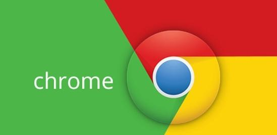

Google Chrome，又称Google浏览器，是一个由Google（谷歌）公司开发的网页浏览器。该浏览器是基于其他开源软件所撰写，包括WebKit，目标是提升稳定性、速度和安全性，并创造出简单且有效率的使用者界面。
Mozilla Firefox，中文俗称“火狐”（正式缩写为Fx或fx，非正式缩写为FF），是一个自由及开放源代码网页浏览器，使用Gecko排版引擎，支持多种操作系统，如Windows、Mac OS X及GNU/Linux等。
afari,苹果计算机的最新操作系统Mac OS X中新的浏览器，用来取代之前的Internet ExplorerforMac。Safari使用了KDE的KHTML作为浏览器的计算核心。 该浏览器已支持Windows平台，但是与运行在Mac OS X上的safari相比，有些功能出现丢失。
Opera浏览器，是一款挪威Opera Software ASA公司制作的支持多页面标签式浏览的网络浏览器，是跨平台浏览器可以在Windows、Mac和Linux三个操作系统平台上运行。
Opera浏览器，是一款挪威Opera Software ASA公司制作的支持多页面标签式浏览的网络浏览器，是跨平台浏览器可以在Windows、Mac和Linux三个操作系统平台上运行。